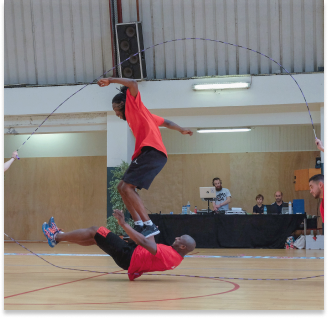

Il semblerait que cette forme de jeu ait fait une brève apparition dans les années 50 dans les cours de récréations françaises.
Ce qui est sûr, c’est qu’un groupe de jeunes filles a assisté en 1982 à l’étape française d’une tournée marquant le début de la culture hip-hop en France où se produisaient des jeunes filles du Bronx pratiquant une forme chorégraphique du Double Dutch.
Quelques mois après, c’est avec un entraîneur issu de l’athlétisme, que le premier groupe de Double Dutch naissait à Créteil. Plusieurs autres associations ont suivi en Ile-de-France, principalement sur le Val de Marne. Afin de coordonner ces associations et pour promouvoir le Double Dutch, la Fédération de Double Dutch en France a été créée en 1990.
Dès 1992, la dimension spectacle cède la place à celle du sport par la découverte des épreuves et des performances compétitives existantes. En 1993, deux équipes françaises participent à New York au World Invitational Championship organisé par l’A.D.D.L. Depuis, la Fédération œuvre au développement de la discipline sur l’ensemble du territoire français et au-delà de nos frontières.